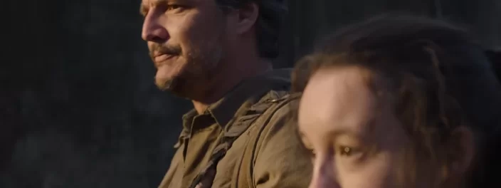

The Last of Us: confira comparativo dos personagens no game e série

A HBO resolveu agraciar os fãs nesta segunda-feira (26), data do The Last of Us Day, e divulgou o primeiro trailer da adaptação do video game para o mundo das séries. O vídeo empolgou os fãs principalmente pelo clima e referências visuais que remetem ao jogo. Além da tensão e um vislumbre de várias das figuras que aparecerão na trama, o trailer também revelou como será o visual dos clickers, por exemplo. O assunto ficou em alta nas redes sociais, sendo um dos temas mais debatidos do dia. Para aproveitar o hype, o Voxel preparou um comparativo entre jogo e série dos personagens de The Last of Us.
Confira a seguir:
Joel
O protagonista do primeiro game será interpretado por Pedro Pascal na produção da HBO. Apesar de não ser fisicamente idêntico ao Joel original, como muitos fãs pediam, Pascal mostra um semblante bem soturno. Além disso, aparenta ter uma química muito boa com a personagem seguinte.
Ellie
A jovem que precisa ser entregue para um grupo dos Vagalumes, uma das principais facções do game, foi interpretada por Bella Ramsey. O trailer mostra ela passando por momentos complicados, incluindo as passagens no inverno, que é um dos trechos mais difíceis do jogo.
Tess
A colega contrabandista de Joel é vivida por Anna Torv e aparece somente em flashes neste primeiro trailer de The Last of Us. No game, ela negocia a entrega de Ellie para o grupo de Vagalumes em troca de um carregamento de armas.
Bill
O parceiro mal-humorado de Joel tem conhecimento em mecânicas e cria armadilhas e barreiras para lidar com os infectados pelo fungo cordyceps. Interpretado por Nick Offerman, na série ele está bastante parecido com o personagem virtual.
Riley
A melhor amiga de Ellie é mostrada durante o DLC Left Behind e na série foi interpretada pela jovem Storm Reid. Assim como a colega, Riley também é órfã e acaba desenvolvendo uma relação bastante próxima da protagonista.
Marlene
A chefe dos Vagalumes é uma das líderes mais fortes do game e aparece em momentos marcantes. A personagem ganhou vida pela atriz Merle Dandridge, que dublou Marlene nos games.
Extra: Clicker
O primeiro trailer de The Last of Us também mostrou com bastante clareza um clicker (em português chamado de estalador). Ele é o terceiro estágio da infecção pelo cordyceps e tem, dentre as características, o rosto partido ao meio pelo fungo e o característico som de estalo. Por ser uma figura cega, a criatura se guia pelos sons.
Apesar de divulgar o trailer completo, a HBO não revelou a data de estreia de The Last of Us, só dizendo que a série chega em 2023. E aí, o que achou desse vislumbre dos personagens da série? Achou parecido com os jogos? Quais as suas expectativas? Deixe a sua nos comentários abaixo!